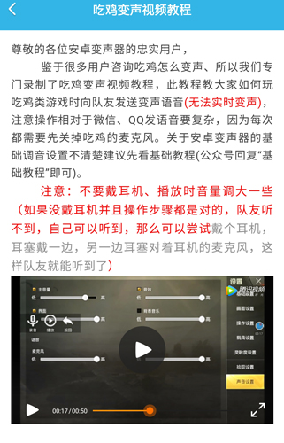

Voicechanger 快问快答：一个能录音、能变声、还能叠环境音的声音玩梗工具
整理了关于 Voicechanger 的八个高频问题——从它能做什么、怎么用、有什么坑到值不值得装，一问一答讲清楚这款变声应用的真实体验。
整理一篇关于 Voicechanger 的快问快答，把大家常问的问题一次性说透。
Voicechanger 到底是什么？
一句话：这是一个先录音、后变声、可叠环境音的声音处理应用。它的官网上讲得很清楚，核心设计是把"录音"和"加效果"拆成两步——先录一段原声存成"干声"，然后反复给这段干声套不同的声线、叠加场景音，直到满意再保存。
市面上同类软件大多是边录边烧效果，一旦选错声线就得整个重录。Voicechanger 把这个不可逆操作变成了可逆的：声线不喜欢？换回原声重选一个。环境音加错了？点一下取消。这个"先存底后加工"的设计是它最实用的地方。
谁会需要这个东西？
三类人：
创作者——短视频旁白、鬼畜素材、配音短剧的配角声线。TTS 能省很多事，但主角和情绪复杂的角色还是得真人录。
游戏玩家——开黑的时候不想用真声，或者想整个反差感（萝莉音的大叔、低音炮的小姐姐）。悬浮窗模式支持边玩边录边变声，不用切应用。
社交玩梗——给朋友发个变声语音、录一段搞笑台词、配合环境音做个小场景。这个场景用量不大但用得频繁，图的就是个方便。
怎么装？
直接下载安装就行。安装包从官方下载拿，装完打开会弹麦克风权限，授权一下就能用。没有复杂的配置，首次进入看到的就是主界面——正中那颗大圆圈是录音键，左边声线库横滑切换，右边是环境音。
核心操作难不难？
不难。录音就是点一下大按钮，等倒计时，说话，再点一下停。停了之后原声自动存好，这时候界面不会自动跳下一步，停在主界面等你选声线。
选声线是横滑点选——左侧一排声线图标，划过去看中哪个点哪个，变声效果实时套在干声上，点试听就能听。右边环境音同理，可叠可不叠，叠了之后想去掉再点一下就取消。整个流程没有任何不可逆操作，这一点比很多同类软件体验好。

变声效果靠不靠谱？
要看你想做什么。
角色级替换（变成另一个人或另一个生物）——效果很明显。性别年龄组、科幻恐怖组、动物搞怪组各有十几条声线，点一下直接变身。想当萝莉、想装大叔、想学哈士奇叫，都有现成的。
质感级微调（保留自己的声音但做优化）——基础器材组管这个。"正常"是最接近原声的声线，处理一下让声音更干净；"工作室"模拟录音棚质感，适合正式配音；"电话"压缩频带做电话音效。判断标准很简单：你是想变成另一个人，还是想让自己的声音听起来不一样？前者用前三组，后者用基础器材组。
有个误区要提醒：声线是骨架，参数和质感才是血肉。很多人选完声线就完了，其实再调调清晰度、音量、变速，效果会更自然——每组声线的参数搭配方案在Voicechanger文档里都有整理。
游戏里开了悬浮窗变声，队友听不到怎么办？
从后往前排查三个关键点：
第一，游戏麦克风开了没。 这是最常见的原因。Voicechanger 放出来的变声，是靠扬声器外放→游戏麦克风录进去→队友听到的链路传递的。如果游戏里麦克风静音了，整个链条就断了。进游戏设置确认麦克风是开着的。
第二，Voicechanger 自己有没有真的在播放。 录完停止点播放，你自己能听到扬声器放出变声吗？如果听不到，检查手机有没有静音、Voicechanger 里的音量参数、选的声线是不是非人声效果（比如警笛）。听不到就重开试试。
第三，悬浮窗模式对不对。 悬浮窗分普通模式和聊天变声模式。普通模式只显示面板，聊天变声模式是封装好的一键流程。建议用聊天变声模式，把录音-停止-播放串成一步，不容易漏操作。
以上都排查过了还是不行？可能是手机厂商的系统限制，把 Voicechanger 加到电池白名单、允许后台运行，或者换外置蓝牙音箱减少回音。

TTS 文字转语音能用吗？
能用，但要搞清楚它和录音的关系。
TTS 适合长段旁白、鬼畜恶搞台词、多人对话里的配角、不方便开口的时候。打一段话，几秒钟生成语音，不满意调变速变调就行。但 TTS 是录音的补充，不是替代——真人录音的情绪表达和语气起伏，目前 TTS 还做不到。
有三个使用心得：标点太少会整段念像机器人，多打逗号句号；几百字长文机械感重，分 200 字以内小段分别生成再拼接；别对 TTS 期望太自然，适合旁白和功能性台词，不适合情感充沛的演绎。
和同类软件比怎么样？
两个核心优势。
第一，先存干声后加效果的工作流。 同类很多是边录边烧，Voicechanger 把所有操作拆成可逆的——声线、环境音、参数，任何一步不满意都能回去改。这个设计让试错成本降到零。
第二，声线分类清晰。 不是几十条声线堆在一起让你瞎试，而是按用途分组：角色替换（性别/科幻/动物）一组，质感微调（基础器材）一组。先定位需求再挑组，比盲试高效得多。
当然也有局限：它是移动端应用，处理能力不如桌面端专业软件，超长录音的变声处理会变慢。但日常几秒到几十秒的使用场景都是秒级出结果。
值不值得长期用？
取决于你对声音玩不玩。如果只是偶尔想换个声线发个消息用一次，随便什么变声应用都行。但如果你经常需要录音、变声、调效果——不管是做内容还是开黑玩梗——Voicechanger 这套"先存底后加工"的可逆工作流，加上分组清晰的声线库，确实能省不少反复重录的时间。
最后一句：它不是专业音频工作站，但作为一款移动端声音玩梗工具，录音-变声-叠环境音三步跑通且全程可撤销，这个定位做得挺扎实。相关资料分存了几份，GitHub是主仓，Gitee方便国内访问，GitCode是另一份备份。